Λογισμός Συναρτήσεων Μιας Μεταβλητής, Σ. Τουμπής, Σ. Γκιτζένης, Εκδόσεις Κάλλιππος

Συγγραφείς: Σ. Τουμπής, Σ. Γκιτζένης
Έτος έκδοσης: 2015
Το σύγγραμμα προορίζεται για χρήση στη διδασκαλία της βασικής θεωρίας του Λογισμού συναρτήσεων μιας μεταβλητής. Απευθύνεται σε πρωτοετείς φοιτητές Ελληνικών Πανεπιστημίων, και λαμβάνει υπόψιν τις γνώσεις που έχουν αφομοιώσει στο Λύκειο και ιδιαιτέρως κατά την προετοιμασία τους για τις Πανελλήνιες Εξετάσεις. Περιλαμβάνονται κεφάλαια με αντικείμενο τα αξιώματα των αριθμών, τα όρια, τη συνέχεια, την παράγωγο και τις εφαρμογές της, τον ορισμό του ολοκληρώματος και τις βασικές του ιδιότητες και εφαρμογές (σε υπολογισμούς όγκων, μηκών, κ.ο.κ.), τις διαφορικές εξισώσεις, τα πολυώνυμα Taylor, ακολουθίες, σειρές, και κάποια στοιχεία αναλυτικής γεωμετρίας (διανύσματα και κωνικές τομές). Αν και το σύγγραμμα μπορεί σαφώς να χρησιμοποιηθεί σε τμήματα Μαθηματικών, Φυσικής και τμήματα Πολυτεχνικών Σχολών, εντούτοις, λόγω του μεγάλου εύρους της ύλης που καλύπτει, το βιβλίο είναι ιδανικό για διδασκαλία σε τμήματα τα οποία περιλαμβάνουν ένα σχετικά μικρό αριθμό μαθημάτων μαθηματικού υποβάθρου, και αφιερώνουν περίπου 1 μάθημα σε Λογισμό Μίας Μεταβλητής και συναφή θέματα. Υπάρχουν δεκάδες τέτοια τμήματα στην επικράτεια, π.χ. ΑΕΙ Πληροφορικής, Βιολογίας, Χημείας, Οικονομικής Επιστήμης, κ.ο.κ., καθώς και ΤΕΙ τεχνολογικής κατεύθυνσης. Οι βασικοί στόχοι του βιβλίου είναι: Οι φοιτητές να εμβαθύνουν στην ύλη που ήδη ξέρουν από το Λύκειο, δηλαδή τις βασικές έννοιες των παραγώγων και των ολοκληρωμάτων. Οι φοιτητές να μάθουν ορισμένα νέα κομμάτια θεωρίας (π.χ. συνέχεια Lipschitz) και νέες εφαρμογές των ήδη γνωστών τους εννοιών (π.χ. υπολογισμοί διάφορων όγκων). Οι φοιτητές να έρθουν σε επαφή με γνωστικά αντικειμενα όπως τα πολυώνυμα Taylor και διάφοροι αριθμητικές μέθοδοι (Μεθόδους Newton, Euler, κ.ο.κ.), τα οποία αποτελούν βασικά εργαλεία άλλων μαθημάτων στη συνέχεια των σπουδών τους. Η ύλη να παρουσιάζεται κατά το δυνατόν αυστηρά ώστε να ενισχυθεί η ικανότητα των φοιτητών για δομημένη σκέψη. Ταυτόχρονα παρέχεται μεγάλο πλήθος ασκήσεων και παραδειγμάτων για καλύτερη κατανόηση.
Αξιολόγηση: (4.4 από 74 αξιολογήσεις)
Περιεχόμενα
Κεφάλαιο 1: Αριθμοί
Κεφάλαιο 2: Συναρτήσεις
Κεφάλαιο 3: Όρια
Κεφάλαιο 4: Συνέχεια
Κεφάλαιο 5: Παράγωγοι
Κεφάλαιο 6: Εφαρμογές της Παραγώγου
Κεφάλαιο 7: Το Ολοκλήρωμα
Κεφάλαιο 8: Τεχνικές Ολοκλήρωσης
Κεφάλαιο 9: Εφαρμογές Ολοκληρωμάτων
Κεφάλαιο 10: Διαφορικές Εξισώσεις
Κεφάλαιο 11: Πολυώνυμα Taylor
Κεφάλαιο 12: Σειρές
Το εισαγωγικό αυτό κεφάλαιο εξυπηρετεί δύο αλληλοκαλυπτόμενους σκοπούς. Πρώτον, θυμίζει στον αναγνώστη πολλές από τις γνώσεις που είναι προαπαιτούμενες σε ένα μάθημα Λογισμού συναρτήσεων μίας μεταβλητής, ιδιαιτέρως παρουσιάζοντας το συμβολισμό και τους ορισμούς που θα χρησιμοποιηθούν στη συνέχεια. Επειδή η ύλη είναι γνωστή από το Λύκειο, θα είμαστε αρκετά περιληπτικοί. Δεύτερον, αποτελεί σύντομη εισαγωγή στην αξιωματική θεμελίωση των πραγματικών αριθμών. Σε αντίθεση με τη συνήθη λυκειακή προσέγγιση, ξεκινάμε από ένα ελάχιστο πλήθος ιδιοτήτων που αποδεχόμαστε αξιωματικά, και κατόπιν δείχνουμε πώς μπορούμε να αποδείξουμε, βάσει αυτών, το σύνολο των γνωστών ιδιοτήτων των πραγματικών αριθμών. Ιδιαιτέρως, εισάγουμε την έννοια του supremum, που είναι απαραίτητη σε πολλά κρίσιμα σημεία της ανάπτυξης της θεωρίας, όπως, για παράδειγμα, στην απόδειξη του Θεωρήματος του Bolzano και στον ορισμό του ολοκληρώματος.
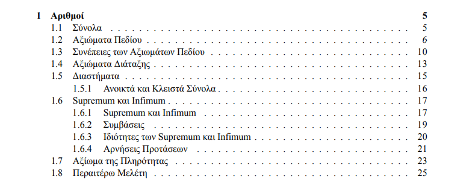
Στο δεύτερο, και τελευταίο, εισαγωγικό κεφάλαιο θυμίζουμε καταρχάς, περιληπτικά, την έννοια της συνάρτησης και εξετάζουμε ορισμένες ειδικές περιπτώσεις συναρτήσεων. Κατόπιν θυμίζουμε τον ορισμό και τις βασικότερες ιδιότητες των τριγωνομετρικών συναρτήσεων. Ολοκληρώνουμε δείχνοντας κάτι νέο, και συγκεκριμένα πώς μπορούμε να κατασκευάσουμε το γράφημα μιας συνάρτησης χρησιμοποιώντας πολικές, αντί για καρτεσιανές, συντεταγμένες.
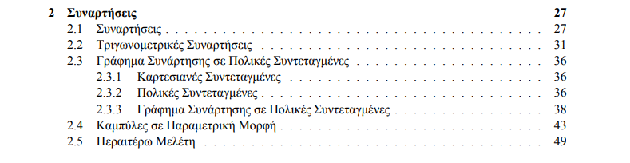
Γίνεται εισαγωγή στην έννοια της συνέχειας, ακολουθώντας την δομή του Λυκείου . Κεντρική θέση έχει το Θεώρημα του Bolzano και οι εφαρμογές του. Σε μεγάλο βαθμό η ύλη είναι γνωστή από το Λύκειο. Το καινούργιο στοιχείο είναι η αυστηρή απόδειξη όλων των θεωρημάτων, ξεκινώντας από την απόδειξη του Θεωρήματος του Bolzano με χρήση της έννοιας του supremum. Παρουσιάζονται, επίσης, δύο νέα κομμάτια ύλης: 1) Η Μέθοδος της Διχοτόμησης. Το πρώτο παράδειγμα αριθμητικής μεθόδου που θα δουν οι φοιτητές.2) Συνέχεια Lipschitz . Πέραν της χρησιμότητάς της σε κατοπινά θέματα αριθμητικής ανάλυσης, είναι μια βατή έννοια που βοηθά να ξεκαθαρίσουν οι φοιτητές τις διαφορές ανάμεσα στην συνέχεια και την παραγώγιση.
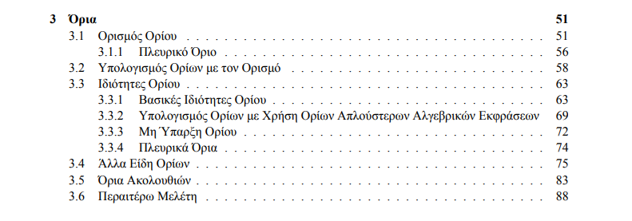
Γίνεται εισαγωγή στην έννοια της συνέχειας, ακολουθώντας την δομή του Λυκείου . Κεντρική θέση έχει το Θεώρημα του Bolzano και οι εφαρμογές του. Σε μεγάλο βαθμό η ύλη είναι γνωστή από το Λύκειο. Το καινούργιο στοιχείο είναι η αυστηρή απόδειξη όλων των θεωρημάτων, ξεκινώντας από την απόδειξη του Θεωρήματος του Bolzano με χρήση της έννοιας του supremum. Παρουσιάζονται, επίσης, δύο νέα κομμάτια ύλης: 1) Η Μέθοδος της Διχοτόμησης. Το πρώτο παράδειγμα αριθμητικής μεθόδου που θα δουν οι φοιτητές.2) Συνέχεια Lipschitz . Πέραν της χρησιμότητάς της σε κατοπινά θέματα αριθμητικής ανάλυσης, είναι μια βατή έννοια που βοηθά να ξεκαθαρίσουν οι φοιτητές τις διαφορές ανάμεσα στην συνέχεια και την παραγώγιση.
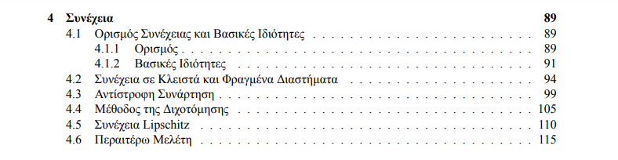
Παρουσιάζεται η βασική έννοια της παραγώγου. Όπως φαίνεται και από τα περιεχόμενα, η δομή της ύλης είναι η συνήθης. Καθώς οι φοιτητές έχουν εκτεθεί στην έννοια της παραγώγου από το Λύκειο, δίνεται έμφαση στην ύλη που τους είναι σχετικά καινούργια, δηλαδή 1) Οι αποδείξεις των διάφορων ιδιοτήτων της παραγώγου μέσω του ορισμού της. 2) Ο υπολογισμός της παραγώγου της αντίστροφης συνάρτησης και οι εφαρμογές του, για παράδειγμα στον υπολογισμό παραγώγων αντίστροφων τριγωνομετρικών συναρτήσεων.
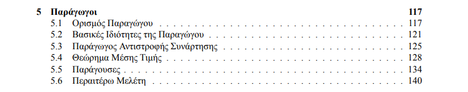
Έχουν συγκεντρωθεί σε ένα κεφάλαιο μερικές από τις πιο κοινές εφαρμογές των παραγώγων. Μερικές από αυτές είναι γνωστές από το Λύκειο. Οι υπόλοιπες είναι καινούργιες:1) Δείχνουμε πως μπορούμε να υπολογίσουμε εύκολα τις τιμές κάποιας συνάρτησης, προσεγγιστικά, βάσει των τιμών της συνάρτησης και της παραγώγου της σε ένα κοντινό σημείο. Στόχος είναι η αποσαφήνιση της γεωμετρικής ερμηνείας της παραγώγου.2) Βλέπουμε την Μέθοδο του Νεύτωνα, ως μια ακόμα μέθοδο εντοπισμού ριζών, μετά την Μέθοδο της Διχοτόμησης. Η αντιπαραβολή των δύο μεθόδων έχει μεγάλη εκπαιδευτική αξία.3) Εισάγεται η έννοια της Κυρτότητας, σύμφωνα με τον ευρέως αποδεκτό ορισμό (δηλαδή στις κυρτές συναρτήσεις οι χορδές βρίσκονται κάτω από το γράφημα της συνάρτησης.4) Μελετούμε τον Κανόνα του Hospital
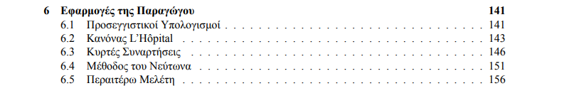
Παρουσιάζεται ο ορισμός του ολοκληρώματος κατά Darboux. Κατόπιν, αναφέρονται τα πιο σημαντικά κριτήρια ολοκληρωσιμότητας και οι βασικές ιδιότητες του ολοκληρώματος. Λόγω της αυξημένες δυσκολίας που έχει το αντικείμενο για πρωτοετείς φοιτητές, ορισμένες από τις πιο σύνθετες αποδείξεις παραλείπονται, ενώ ορισμένα σημαντικά θέματα (π.χ. το κριτήριο Lebesgue για την ολοκληρωσιμότητα κατά Riemann) παραλείπονται. Παρ' όλα αυτά, η επιλογή της ύλης είναι τέτοια ώστε οι φοιτητές να έρθουν σε επαφή με την ουσία του ορισμού του ολοκληρώματος. Στο τέλος του κεφαλαίου δίνεται ο ορισμός κατά Riemann και αποδεικνύεται η ισοδυναμία των δύο. Κατά το σύνηθες, έχει προτιμηθεί να δοθεί καταρχήν ο ορισμός κατά Darboux αντί του ορισμού του Riemann, καθώς σε αυτή την περίπτωση η εξέλιξη της θεωρίας είναι κάπως απλούστερη.
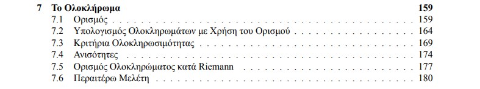
Περιεχόμενα Κεφαλαίου 7.1: Θεμελιώδη Θεωρήματα Λογισμού 7.2: Λογαριθμική και Εκθετική Συνάρτηση 7.3: Ασκήσεις με την Λογαριθμική και την Εκθετική Συνάρτηση 7.4: Καταχρηστικά Ολοκληρώματα Η Παράγραφος 7.1 επικεντρώνεται στο Θεμελιώδες Θεώρημα του Λογισμού, και τις άμεσες απόρροιές του, για παράδειγμα τα θεωρήματα της ολοκλήρωσης με αντικατάσταση και ολοκλήρωσης κατά παράγοντες. Έχοντας την αναγκαία θεωρία στη διάθεσή μας, στην Παράγραφο 7.2 δίνουμε τον ορισμό της εκθετικής και της λογαριθμικής συνάρτησης, καθώς και τις βασικές τους ιδιότητες. Στην Παράγραφο 7.3 παρουσιάζονται σχετικές ασκήσεις. Στην Παράγραφο 7.4 ορίζουμε τα Καταχρηστικά Ολοκληρώματα πρώτου και δεύτερου τύπου. Ο υπολογισμός κάθε καταχρηστικού ολοκληρώματος ανάγεται στον υπολογισμό καταρχάς ενός ολοκληρώματος, και κατόπιν ενός ορίου. Επομένως, ασκήσεις στα καταχρηστικά ολοκληρώματα είναι εξαιρετικά χρήσιμες στην εμπέδωση και των δύο αυτών κομματιών της θεωρίας, και για αυτό δίνεται βαρύτητα σε αυτή την έννοια.
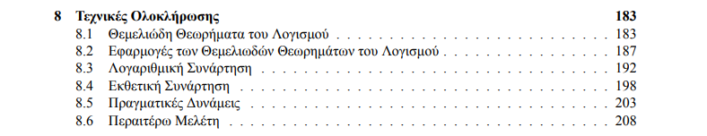
Το ολοκλήρωμα, στις διάφορες μορφές του, είναι ο ελβετικός σουγιάς των φυσικών επιστημών. Σε αυτό το κεφάλαιο θα δούμε ένα μικρό μόνο μέρος των εφαρμογών που έχει η απλή μορφή του ολοκληρώματος που γνωρίσαμε στα προηγούμενα κεφάλαια, δηλαδή το ολοκλήρωμα Riemann. Αρχικά παρουσιάζουμε τα καταχρηστικά ολοκληρώματα (γνωστά στη βιβλιογραφία και ως γενικευμένα ολοκληρώματα). Κατόπιν δείχνουμε πώς μπορούμε να υπολογίσουμε το εμβαδόν χωρίων που έχουν οριστεί με χρήση πολικών συντεταγμένων. Το ολοκλήρωμα είναι τόσο ισχυρό εργαλείο, ώστε όχι μόνο μπορεί να υπολογίσει οποιοδήποτε εμβαδόν, αλλά μπορεί να υπολογίσει και όγκους ορισμένων στερεών, και συγκεκριμένα αυτών που έχουν δημιουργηθεί εκ περιστροφής. Ολοκληρώνουμε δείχνοντας πώς μπορεί να υπολογιστεί το μήκος καμπυλών που έχουν οριστεί σε παραμετρική μορφή.
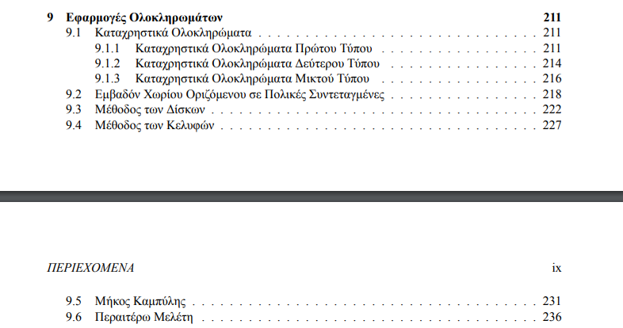
Αξιολόγηση: Το Κεφάλαιο 9 είναι μια σύντομη εισαγωγή στις διαφορικές εξισώσεις (ΔΕ). Με δεδομένο ότι το αντικείμενο έχει τεράστια έκταση, περιοριζόμαστε σε ορισμένες κατηγορίες συνήθων ΔΕ πρώτης τάξης, με έμφαση τις γραμμικές ΔΕ 1ης τάξης και τις ΔΕ 1ης τάξης χωριζομένων μεταβλητών. Κάνουμε επίσης μια σύντομη αναφορά στις γραμμικές ομογενείς ΔΕ με σταθερούς συντελεστές δεύτερης τάξης. Ολοκληρώνουμε με μια σύντομη εισαγωγή στην Μέθοδο του Euler. Ο στόχος της παραγράφου είναι αφενός να φέρει για πρώτη φορά τους φοιτητές σε επαφή με μια μέθοδο που ενδεχομένως συναντήσουν σε άλλα μαθήματα αριθμητικής ανάλυσης, αφετέρου να τους βοηθήσει να εμπεδώσουν την έννοια της ΔΕ.
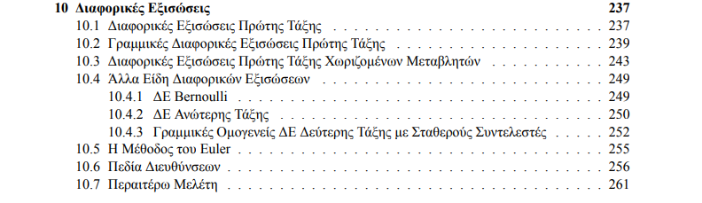
Το κεφάλαιο είναι μια πρώτη εισαγωγή στη θεωρία του πολυώνυμου Taylor* Στόχος της Παραγράφου 11.1 είναι να αποκτήσουν οι φοιτητές εξοικείωση με την έννοια του Πολυώνυμου Taylor, και μέσω της χρήσης διαδραστικών στοιχείων (για παράδειγμα, σχεδιασμός πολυώνυμων Taylor τάξης που επιλέγεται από τον αναγνώστη). * Στην Παραγράφου 11.2 εμφανίζεται το Θεώρημα Taylor και κάποιες ενδιαφέρουσες εφαρμογές του, για παράδειγμα ο προσεγγιστικός υπολογισμός διαφόρων ποσοτήτων (π.χ., του e) με φράγμα στο σφάλμα.
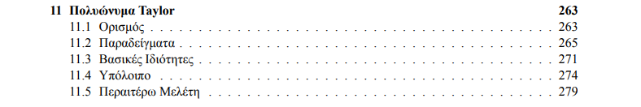
Το κεφάλαιο είναι μια σύντομη εισαγωγή στη θεωρία σειρών. Επικεντρωνόμαστε στις σειρές με μη αρνητικούς όρους, οι οποίες είναι και οι πιο ενδιαφέρουσες από άποψη εφαρμογών, αλλά κάνουμε και μια σύντομη αναφορά στις εναλλάσσουσες σειρές.
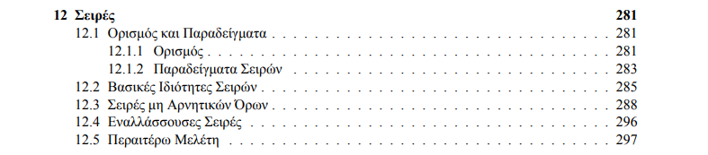